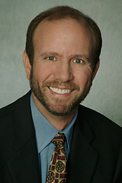

All About Us :: Our Network Gary Mandell Gary founded The Mandell Group, an independent, full service financial planning and portfolio management firm serving nationwide clientele in 1984 after spending two years with another firm in Chicago and two years with public accounting firms in Cleveland, Ohio, where he was born and raised. His professional credentials include being a Certified Financial Planner, a Registered Investment Advisor, a Certified Public Accountant, a Chartered Life Underwriter and a Chartered Financial Consultant. He is licensed with the NASD as a General Securities Principal and holds a Life and Health Insurance Broker license. In January 1985, Gary became one of the first in the nation to be admitted to the exclusive Registry of Financial Planning Practitioners, and is listed in Who's Who in Finance and Industry. Gary is an active member of several professional organizations, and recently completed has term as a Director of the Institute of Certified Financial Planners. He is a Qualifying Member of the Million Dollar Round Table and served on the American Arbitration Association's Panel of Arbitrators. Gary has been named by Worth Magazine for the past six years as well as by Money Magazine previously as one of the Top 200 Financial Advisors in the country, and he has been profiled in many national publications, including The Wall Street Journal. He is often quoted in, and has authored numerous articles for national publications, and is a frequent lecturer on various financial planning topics. He appears regularly on both local and national television and radio programs, advising listeners on personal financial matters. Gary is a graduate of The Wharton School of Commerce and Finance of the University of Pennsylvania, where he graduated cum laude with a degree in accounting, and earned his Masters of Business Administration with a specialization in finance from the Graduate School of Business of the University of Chicago. |